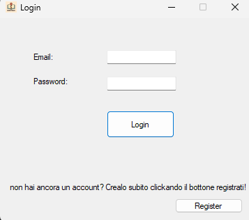
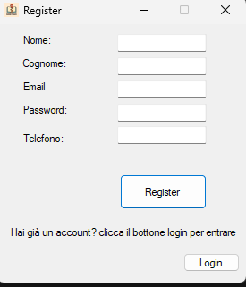
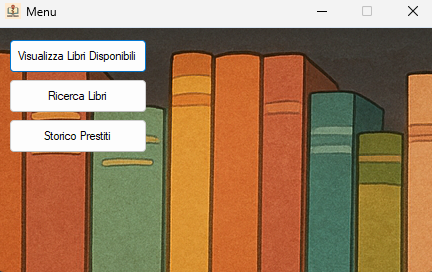
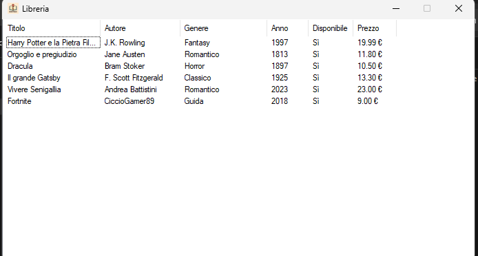
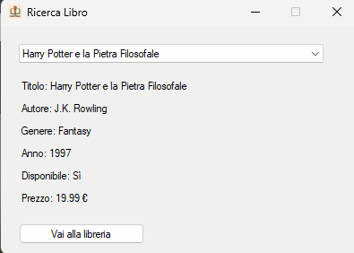
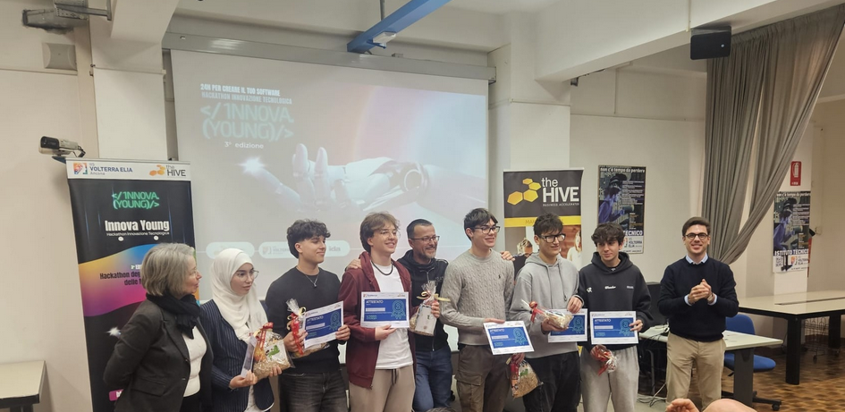
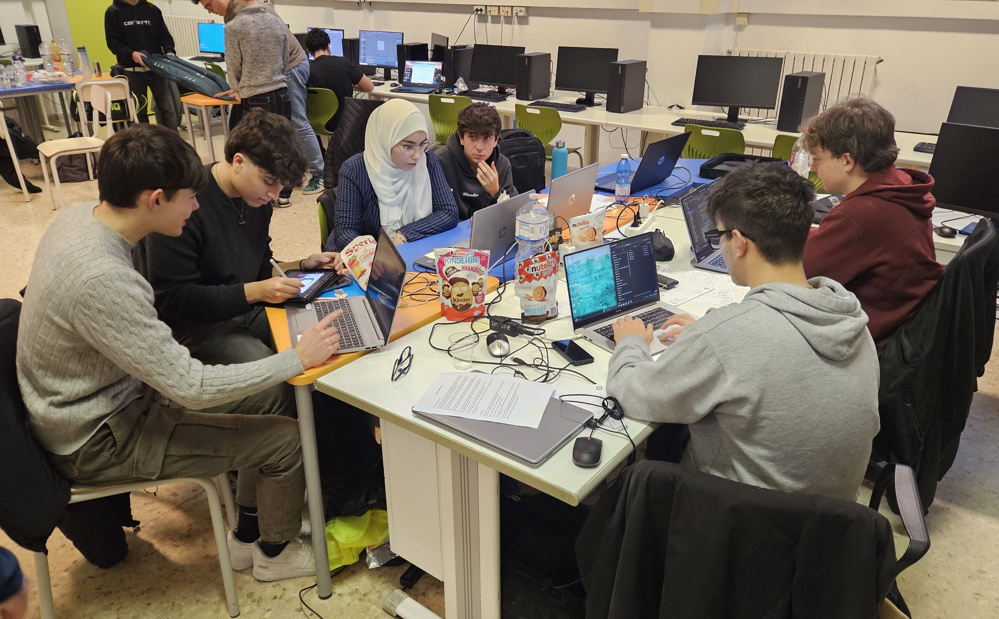

I progetti realizzati durante il percorso scolastico, dal terzo al quinto anno.
Gioco sviluppato in C# ispirato a Clash Royale, realizzato come progetto di gruppo insieme ad Armillotta e Benedetti durante il terzo anno. Il progetto ha permesso di approfondire la programmazione orientata agli oggetti e la gestione di interfacce grafiche in ambiente .NET.
Scarica il documento di analisi (PDF)
BookTrack è un'applicazione Windows Form sviluppata in C# per la gestione di una libreria. Consente la registrazione e il login degli utenti, la visualizzazione dei libri disponibili, la gestione dei prestiti e funzionalità di amministrazione. Il progetto è stato realizzato in gruppo con Tassi Tommaso.





Sito web per l'orientamento scolastico realizzato in collaborazione tra le classi 5DM e 5AM. Il progetto aveva lo scopo di guidare gli studenti nella scelta del percorso scolastico attraverso una piattaforma web completa di informazioni e strumenti interattivi.
Il gruppo era composto da me, Tassi Tommaso e Benedetti Leonardo. Ci siamo occupati del backend delle zone e della pagina principale del sito.
Partecipazione all'Hackathon regionale svoltosi il 18 e 19 dicembre 2025 presso l'Istituto Volterra Elia di Ancona. La competizione ha visto confrontarsi 8 team in rappresentanza degli istituti superiori a indirizzo informatico delle Marche.
Il team del Marconi Pieralisi si è classificato secondo a livello regionale, migliorando i due terzi posti delle edizioni precedenti. Il progetto sviluppato è Octy, un'applicazione ideata e realizzata in 24 ore no-stop dimostrando fattibilità tecnica e sostenibilità economica.
Andrea Battistini (5DM), Filippo Boccoli (5BM), Amir Ghouzlani (4BM), Amira Guendouz (4AM), Alessandro Urbani (4BM), Emanuele Ruzziconi (5CM).


Scarica il Business Plan (PDF)